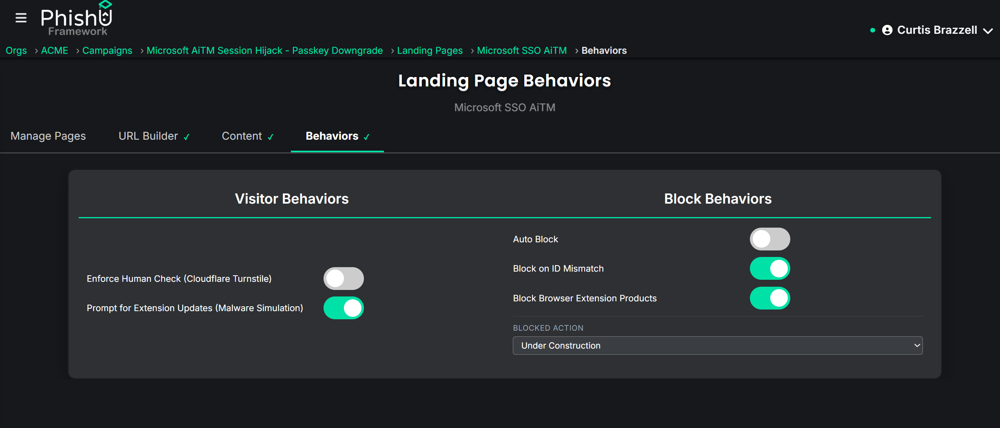
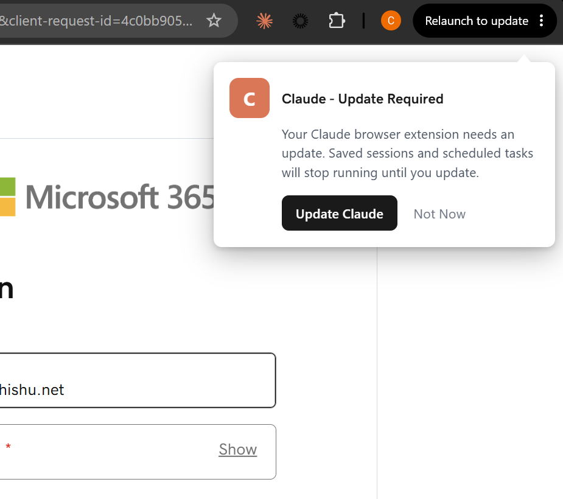

Fake software update prompts have been a staple of malware delivery for years. The pattern is tracked publicly under names like SocGholish, also called FakeUpdates, along with related campaign families such as ClearFake. A visitor lands on a compromised or attacker-controlled page, a full-screen overlay tells them their browser or a familiar application is out of date, and the "Update Now" button hands them a payload instead of an update.
It keeps working for a reason that has nothing to do with technical sophistication. Keeping software updated is genuinely good security advice. Users have been told for two decades to install updates promptly. The prompt asks them to do the thing they have been trained to do, and almost nobody has an independent way to check whether a given piece of software actually needs updating right now.
Why the generic version stopped landing
The weakness in the classic version is that it guesses. A page that tells every visitor their Flash Player is out of date is going to be wrong for nearly all of them, and in 2026 a large share of people will recognize that particular pretext on sight. The prompt has to be plausible for the specific person looking at it, and a generic prompt cannot be.
Which raises the question that makes this technique work properly: what software does this visitor actually have?
A detection built for something else entirely
The PhishU Framework already had a way to answer that, built for an unrelated reason.
We previously shipped browser-security-extension detection, covered in an earlier post on social engineering past browser security extensions. That feature probes for a known extension by requesting a file the extension publishes at a chrome-extension:// address. If the request succeeds, the extension is installed. If it fails, it is not. The purpose there was defensive measurement and evasion: find out whether a security tool is watching, and report on how well it performed.
The probe itself is indifferent to what kind of extension it is looking for. It works exactly the same way for a password manager, a meeting tool, or an ad blocker as it does for a security product. Once you accept that, the same primitive answers a completely different question, and that question is the one the fake update pretext needs. If a visitor has a specific extension installed, a prompt branded for that specific product is dramatically more credible than a generic one, because it names something they recognize and actually use.
So this ships as a second, independent capability rather than a setting on the first one. They are separate toggles on the Landing Page Behaviors tab, they can be enabled independently, and they measure different things. They just happen to share plumbing underneath.

Allow-list probing, because enumeration is not allowed
There is a hard constraint worth explaining, because it shaped the design.
Browsers deliberately do not let a web page enumerate installed extensions. There is no API that returns a list. That boundary exists for good privacy reasons, and it is exactly why detection has to work the way it does: you can only check for extensions you already decided to check for, one identifier at a time.
That constraint produced the most interesting design decision in the build. The instinct, when no specific extension is identified, is to fall back on something like "we know they have some extension, so show a generic prompt." That turns out to be impossible rather than merely difficult, because there is no way to learn that an unlisted extension exists at all. So instead of faking a workaround, a visit where nothing on the list is present is recorded as its own explicit outcome. Every visit with the feature enabled resolves to one of three states: nothing recognized, prompt shown, or prompt clicked.
Three outcomes is a better susceptibility signal than a binary one anyway. "We checked and found nothing to impersonate" is a genuinely different result from "we showed them a convincing prompt and they ignored it," and collapsing those two into a single number would hide the distinction.
The catalog, and an honest word about what it does
The catalog behind the feature holds 604 researched, categorized extensions spanning crypto wallets, developer tools, meeting apps, password managers, accessibility tools, CRM and sales tooling, VPNs, PDF utilities, and more. Of those, 455 carry a confirmed Chrome Web Store identifier. The remainder are name-only reference entries, either because the product has no browser extension at all or because the research pass could not confirm a current identifier and correctly declined to invent one.
Here is the part that matters, and it is worth being direct about it rather than quoting the big number and moving on.
Confirming that an extension is installed requires knowing a real file path it publishes, and that has to be verified per extension. Two entries have that today: Bitwarden and uBlock Origin, both open source, so their manifests could be checked against public source rather than guessed. Everything else with an identifier falls into a best-effort tier that tries a small set of likely paths, including the contract Chrome documents for its own favicon interface plus a handful of common icon conventions. Those guesses will resolve correctly for some real installations and miss for others, and that hit rate has not been measured at scale. A wrong guess simply reads as "not installed," which is the same thing an absent extension looks like, so there is no accuracy penalty for trying broadly.
So the accurate description is a large, researched framework with confirmed detection on two specific extensions today and a real chance, not a guarantee, of recognizing many more. It is not a tool that detects 604 browser extensions, and we are not going to describe it that way.

It only fires for real visitors
The overlay renders only after the genuine landing page content has mounted for a visitor who was not diverted to a block page. Anyone caught by the blocklist, an identifier mismatch, or the human check sees the usual block content and never reaches the code path that draws the prompt. That is structural rather than a separate check somebody has to remember to add, which is the difference between a rule and a guarantee.
The training slide is about you specifically
Most conditional training in the platform keys off a campaign-level flag: did this campaign use a QR code, a Browser-in-Browser overlay, an attachment. Useful, but coarse.
This one reads the actual event data for the individual recipient. The slide appears only for someone who was personally shown the prompt, and the content names the real extension that was impersonated for them and states whether they clicked it. Not "here is a slide about fake update scams," but "here is the Bitwarden update prompt you saw on Tuesday, and here is what you did next."
That specificity is the entire premise of PhishU's approach to training. The moment of recognition, the "I fell for that," is what changes behavior later. A generic module about update scams does not produce it.
Where the number lands in reporting, and why that took a correction
The first implementation filed shown and clicked counts under credential statistics, next to captured sessions and MFA tokens, on the reasoning that it lives in a capture table like credentials do.
That was wrong, and fixing it is worth describing because the category of a metric determines how a reader treats it. Clicking a fake update prompt is a susceptibility signal. It measures whether someone would engage with an urgent-update pretext for software they recognize. It is not evidence that anything was compromised, because in this phase nothing is downloaded and nothing executes. The prompt is shown, the click is recorded, and that is the extent of it.
Filing that alongside captured credentials would tell a CISO reading the report that thirty people were compromised, when what actually happened is that thirty people demonstrated they would probably click a real one. Those call for different responses. The metric now sits with attachments opened and QR codes scanned, where it belongs, as a dashboard tile and a funnel step that appear only when the behavior produced data.
One related detail: the toggle state is captured per send rather than read live at report time. Flipping the setting on a landing page months later does not retroactively change what a past campaign's report and training say happened. Point-in-time correctness is easy to overlook and hard to fix after the fact.
What this does not do yet
Three honest limits.
There is no payload. This phase measures whether a target would click an update pretext for software they actually run. Nothing is downloaded and nothing is executed.
The metric appears on the Org Analytics dashboard and in per-campaign data, but does not yet have its own section in the generated PDF report.
And the best-effort detection tier is exactly that. Its real-world hit rate against genuinely installed extensions has not been measured, and the specific limits chosen are engineering judgment rather than tuned numbers.
None of that is a reason to wait on shipping it. It is a reason to describe it accurately.
The part worth taking away
We did not invent the fake update prompt. It is a long-documented, widely-tracked malware delivery pattern, and defenders have been writing about it for years.
What is new here is the targeting. A detection surface built to find defensive tooling turns out to describe the visitor's software just as well, and that turns a pretext everyone has learned to ignore into one branded for something they personally use and trust. Same probe, two entirely different simulations, both measured and both wired into training.
See whether your users would click an update prompt for software they trust
PhishU helps security teams, red teams, pentest firms, and MSSPs run authorized phishing assessments through real defenses, with personalized training and reporting tied to what each person actually experienced.
Contact Us